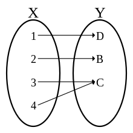
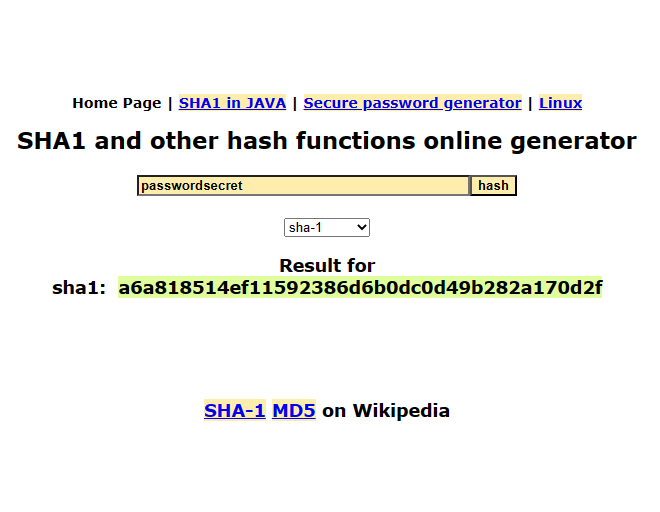
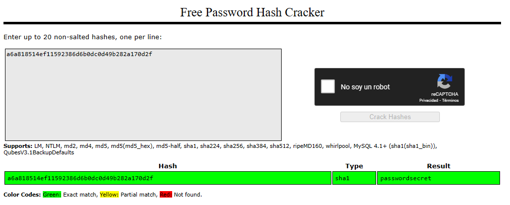

Que es un Rainbow Cracking Attack
Cuando nos registramos en una página web, en una aplicación móvil, la aplicación de tu proveedor financiero, cualquier servicio que requiera un correo y una contraseña tiene que ser almacenado en algún lugar, las empresas tienen distintos métodos de guardar tu información, y una de ellas, probablemente la más usada hasta ahora seria guardar toda esa información sensible en una base de datos, ¿Qué es una base de datos? Una base de datos es una tabla de registros en la cual es almacenada tu información. Las contraseñas por lo general no son guardadas como tu mismo las escribes en tu formulario es decir en texto plano, si no que se implementa un tipo de cifrado computado para que el usuario común sea casi imposible descifrarlo, sin embargo, una computadora si tiene la posibilidad de hacerlo, y los cibercriminales saben cómo hacerlo, y entre una de sus técnicas se encuentra la técnica rainbow crackng hash basada en tabla.
¿Que es un Hash?
Un hash en un algoritmo matemático que computa una serie de datos para transformarlo en una nueva cadena de caracteres, cabe recalcar que esta longitud de caracteres dependiendo del hash o método de encriptación es siempre fija, es decir que tanto encriptar el carácter ‘a’ como encriptar toda una tesis dará el mismo resultado o longitud de caracteres, ahora bien, existen muchos métodos de encriptación, algunas mas inseguras que otras, sin embargo en los sistemas informáticos es más común oír de las siguientes:
-
MD5
-
SHA-1
-
SHA-2
Este método de encriptación de 128 bits es utilizado ampliamente para verificar la autenticidad de un archivo es decir que crea una firma digital para evitar la piratería de archivos modificados o con virus informáticos, aunque este método de encriptación tenga 2^128 de posibles combinaciones, se ha encontrado varios fallos de hash collision esto significa que 2 entradas pueden generar el mismo hash y crear un fallo de seguridad, lo que ha llevado a ser fácilmente vulnerable a ataques de probabilidad, como el birthday attack.
Podemos calcular fácilmente la firma criptográfica de un archivo con la herramienta md5sum implementada en sistemas operativos Unix, tambien podemos crear un hash con un lenguaje de scripting.
SHA o Secure hash Algorithm es una serie de funciones criptográficas desarrolladas por la NSA (National Security Agency) y por la NIST, fueron pensadas para solucionar los problemas de colisión de hash, utilizando su capacidad de no reflexividad es decir que dada una cadena de bits, no es posible tener duplicaciones de salida, sin embargo, en la actualidad se han encontrado varias vulnerabilidades que han hecho que organizaciones dejaran de utilizarlo, en 2004 criptográficos de China han demostrado comprometer la función en 2^69 operaciones y en 2017 se logró crear la primera colisión de SHA1, el equipo de Google y CWI Institute llamada SHAttered, la cual logro crear la colisión en 9 quintillones de cálculos SHA1, 100,000 veces más rápido que la paradoja del ataque birthday, SHA-1 a diferencia de MD5 es una función criptográfica de una longitud de 160 bits, aun asi su uso se recomienda cambiar por alternativas mas seguras, como SHA-2 o SHA-3.

SHA-2 es un conjunto de funciones criptográficas desarrolladas por la NSA, (SHA-224, SHA-256, SHA-384, SHA-512) las cuales tienen como longitud en bits cada función como su nombre lo indica al final, es decir 224, 256, 384 y 512 bits, fueron pensadas para crear una opción más segura, después de las colisiones de hash producidas por su predecesora SHA-1, actualmente SHA-2 y SHA-1 son las tecnologías mas usadas por las organizaciones, pese a que en SHA-1 se encontraron dichas colisiones, aun no se ha llevado por completo el cambio de SHA-1 a SHA-2, sin embargo SHA-2 ya esta implementada en un gran número de aplicaciones y protocolos como SSL, TTL, SSH, etc. además se usan para verificar la autenticidad de los paquetes Debian de GNU/Linux entre otras aplicaciones.
Cracking de hash con Rainbow
Como pudimos observar un hash es un algoritmo computado matemáticamente para verificar firmas, o
huellas digitales, verificar la autenticidad de un archivo o en la mayoría de los casos, para
encriptar una contraseña en una base de datos, ahora bien, nosotros cuando insertamos una contraseña
en texto plano, ya sea al registrarnos en un servicio, o al iniciar sesión en un servicio online, lo
que sucede en el lado del servidor es que la contraseña introducida textualmente en el formulario,
se envía directamente al servidor, y este servidor lo que hace es comparar la contraseña introducida
a manera de hash con la de su base de datos, por supuesto tambien encriptada, y bien, si la
contraseña introducida produce el mismo hash que se genero al registrarte en dicho servicio,
entraras en tu cuenta exitosamente, ahora es comprensible porque los hashes no deben colisionar, ya
que si llegara a pasar podrías insertar otra contraseña que no sea la que inicialmente te
registraste y esto se llamaría colisión de hash, es como si otra persona pudiera desbloquear tus
datos por que tiene tu misma huella dactilar, es por eso que en muchas bases de datos para agregar
más seguridad a sus hashes, se aplica una técnica llamada salting que añade una pequeña diferencia
al hash para que en caso de que caiga en manos de un atacante sea mucho más difícil desencriptarlo.
Un ataque de rainbow table o tabla arcoiris, es una de las maneras en que los ciberdelincuentes o los hackers
éticos utilizan para desencriptar hashes, (con objetivos totalmente distintos claro), consiste en
una tabla de valores de hashes pre-computados, es decir que ya han sido calculadas con sus valores
correspondientes de caracteres, un atacante buscara en la tabla algún valor de hash que coincida con
el correspondiente y asi obtener su contraseña. Si el valor hash de la contraseña desconocida
coincide con uno de los valores hash de la tabla rainbow, puede determinar la contraseña
correspondiente.
En base a esto podemos determinar que una rainbow table puede descifrar contraseñas que sean mas
conocidas o que por lo menos estén dentro de su tabla precalculada es decir que es mucho más difícil
encontrar una coincidencia con una contraseña robusta que con una entrada de contraseña básica como
“1234” o “password” ya que estas en valor de hash podrían ser fácilmente vulnerables a ataques de
tabla arcoíris, podríamos decir en este punto que el valor de entrada de un hash determina la
dificultad de desencriptar el mismo.
A continuación, algunos sitios web de tabla arcoíris online donde podrías probar contraseñas:
Para demostrar esto haremos una prueba con una contraseña y su valor de hash y trataremos de desencriptar el
hash con un ataque de tabla arcoíris para ello iremos a un conversor de texto plano a SHA-1 www.sha1-online.com
y después lo trataremos de desencriptar en crackstation.net

En este caso hemos convertido la cadena de texto “passwordsecret” en un hash y nos ha computado este hash de
salida entonces el hash de “passwordsecret” seria a6a818514ef11592386d6b0dc0d49b282a170d2f ahora
trataremos de
romperlo con un ataque de tabla arcoíris iremos a crackstation.net y introduciremos el hash correspondiente,
automáticamente crackstation.net conocerá que tipo es el hash y tratara de coincidir el hash que introduzcamos
con su tabla de hashes pre-computada:

Como podemos observar la web fue capaz de encontrar una coincidencia de hash y nos ha logrado devolver el hash
desencriptado en el apartado de resultados el cual es “passwordsecret”.
Esta es una de algunas técnicas que utilizan los cibercriminales y los hackers éticos para desencriptar
hashes, existen otras tácticas que utilizan, ataques de fuerza bruta como el ataque de cumpleaños, ataques
basados en diccionario, ataques de hash injection, entre otras. O si es en caso de recuperar tus contraseñas
en plano podrían utilizar otras técnicas como phishing, ingeniería social, man-in-the-middle attack, o
utilizar bases de datos de contraseñas simples vulneradas entre otras.
Mitigar un ataque Rainbow Table Attack
Como dijimos anteriormente un hash es una encriptación algorítmica que encripta cualquier tipo de dato,
texto, o archivo, con funciones matemáticas, ahora bien como observamos anteriormente es fácil poder
quebrantar hashes con técnicas como la tabla arcoíris si las contraseñas son muy sencillas y cortas, de nada
serviría utilizar un algoritmo criptográfico sofisticado si nuestra contraseña es “1234”, es más importante
determinar el valor de entrada de un hash antes que el tipo de encriptación, por lo que es recomendable
utilizar contraseñas robustas en cualquier servicio o sitio online que requiera encriptación.
Ahora si lo que queremos es resguardar la integridad de los datos, si tenemos una base de datos de
contraseñas, como anteriormente explicamos podemos utilizar la técnica de salt o salting la cual consiste en
sumar un valor aleatorio de caracteres a un hash, asi, dificultando los ataques de tabla arcoíris, y los
ataques tipo diccionario, tambien podemos utilizar métodos mucho más seguros como la función de derivación de
claves, entre otras técnicas.
Uso de hashes en sistemas de autenticacion
El correcto funcionamiento y seguridad de la integridad de los datos de los usuarios debe ser de usted y de la empresa a la cual usted le confía sus datos, es por ello que además de usar contraseñas robustas, las empresas pueden optar por implementaciones seguras a sus sistemas de autenticación, organizaciones como OWASP proporcionan técnicas diferentes para el salting aplicado a sistemas de autenticación: Password Storage - OWASP Cheat Sheet Series, tambien existe información acerca de la correcta encriptación de contraseñas con métodos SALT en sistemas ASP.NET proporcionado por Microsoft Hash passwords in ASP.NET Core | Microsoft Learn.